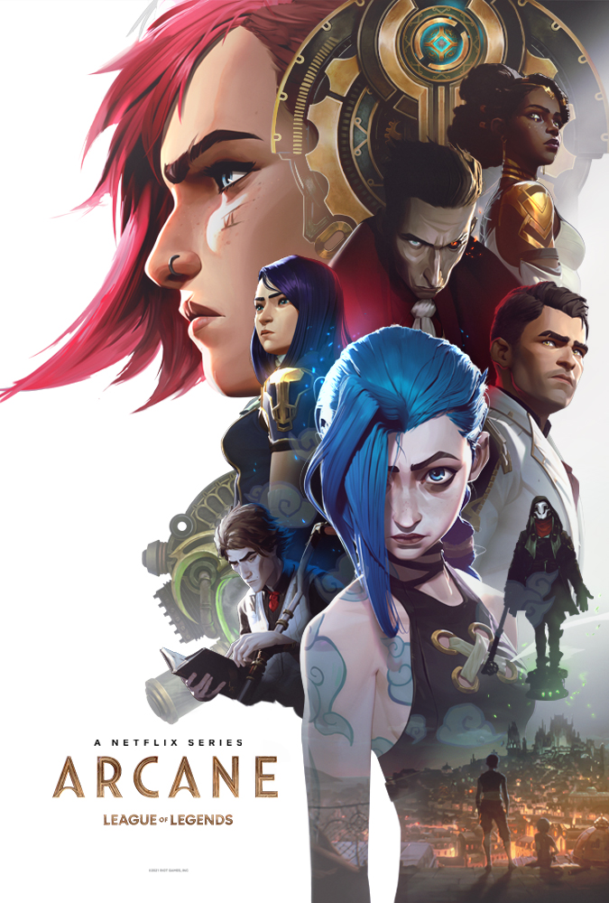
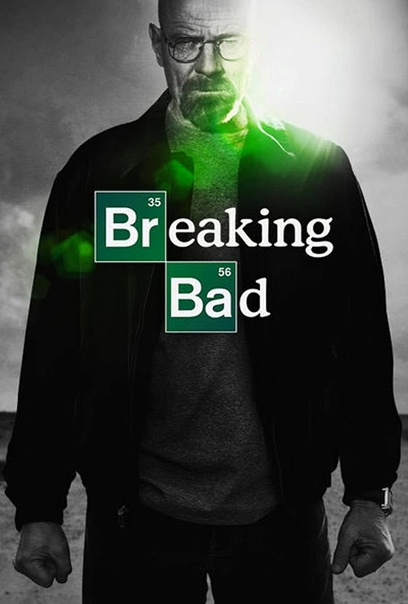
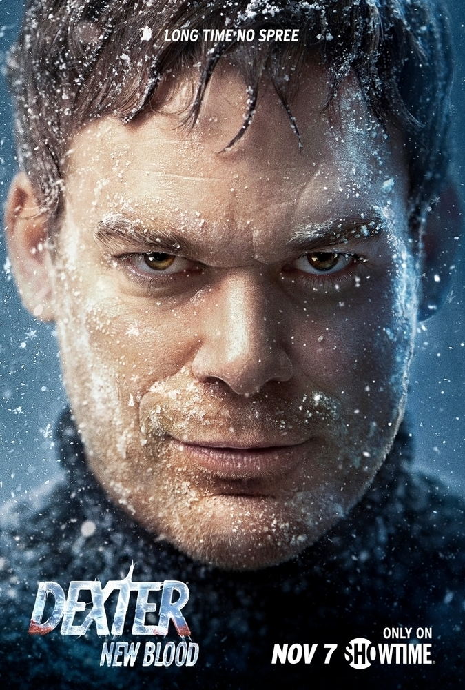

|  |
Arcane
9.3
2021
Akčný | Animovaný | Dobrodružný
Odehrává se konkrétně v utopickém Piltoveru, kde se zaměřuje na dvě soupeřící sestry. Seriál Arcane je zasazen do herního světa League of Legends, který si zamilovala spousta hráčů.
|
|---|---|
|  |
Breaking Bad
9.3
2008-2013
Dráma | Kriminálny | Thriller
U středoškolského učitele chemie je diagnostikována rakovina, a tak se rozhodne před svou smrtí zaopatřit výrobou metamfetaminu svou rodinu. Seriál vyniká naprosto famózní proměnou hlavní postavy z obyčejného člověka v klíčovou postavu drogového obchodu a skutečného bosse.
|
|  |
Dexter: New Blood
9.0
2021
Kriminálny | Misteriózny
Přibližně 10 let po finále osmé série se Dexter Morgan přestěhoval do městečka Iron Lake ve státě New York, přičemž svou identitu skrývá pod jménem Jim Lindsay a pracuje jako místní obchodník. Navázal vztah s místní městskou šéfkou policie Angelou Bishopovou a potlačil své nutkání zabíjet. Řada incidentů okolo Iron Lake způsobuje, že se Dexter obává, že se v něm odhalí jeho „temný pasažér“.
|
 |
Money Heist
9.2
2017-
Kriminálny | Misteriózny
Partička podivných zlodějů se rozhodne spáchat nejdokonalejší loupež v historii Španělska. Napadnou tedy Státní tiskárnu cenin, ze které si chtějí odnést 2,4 miliard euro.
|
 |
Stranger Things
9.2
2016-
Fantazijný | Horor | Sci-Fi
Když se malý chlapec ztratí, jeho matka, přátelé a místní policie musí čelit děsivým, nadpřirozeným silám, aby ho získali zpět.
|
 |
The Witcher
8.2
2019-
Akčný | Dobrodružný | Fantazijný
Seriál Zaklínač zpracovává příběh osudu a rodiny. Geralt z Rivie, samotářský lovec příšer, usilovně hledá své místo ve světě, ve kterém jsou lidé často zkaženější než samotné příšery. Ale když ho osud zavede k mocné čarodějce a mladé princezně s nebezpečným tajemstvím, tak všichni tři musí společně přijít na to, jak přežít na místě, kde se právě nachází.
|